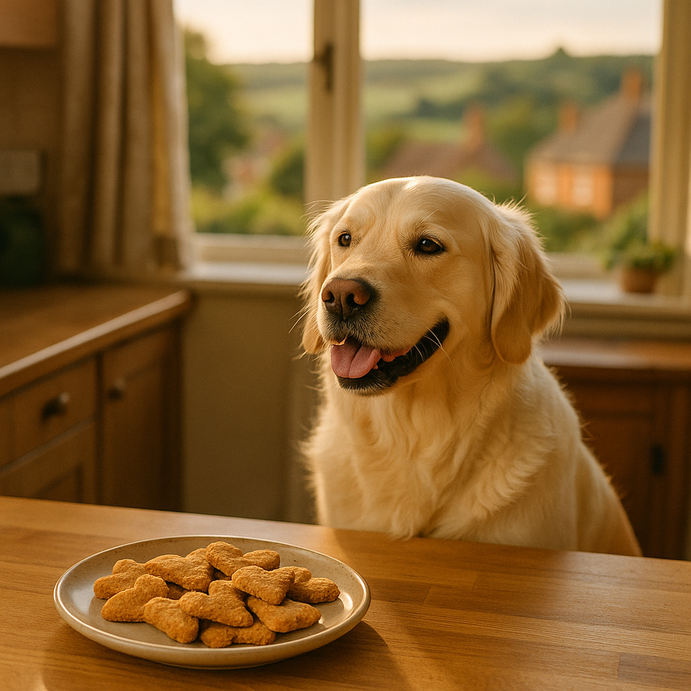

Homemade Dog Treats UK 2026: Easy Recipes Your Dog Will Love
Contents
- Why Make Your Own Dog Treats?
- Safe and Unsafe Ingredients for Dogs
- Quick Peanut Butter and Oat Biscuits
- Frozen Treats for Warm Days
- Meat-Based Training Treats
- Fruit and Vegetable Snacks Dogs Can Eat
- How to Store Homemade Treats
- Tips for Dogs With Allergies or Sensitivities
- Frequently Asked Questions
This article contains affiliate links. We may earn a small commission if you make a purchase, at no extra cost to you.
Homemade dog treats in the UK are easier to make than most owners realise, and they let you control exactly what goes into your dog's mouth. The short answer: a basic dog biscuit needs just three or four ingredients, takes under 30 minutes, and costs a fraction of what you'd pay for a branded bag at the pet shop. Whether you've got a dog with a sensitive stomach, a fussy eater, or simply a Labrador who'd eat the kitchen worktop given half a chance, there is a recipe here that works. According to Loyal & Loved, the biggest advantage of making your own treats isn't cost, it's transparency. You know the source of every ingredient, and that matters more than ever in 2026 as owners become increasingly aware of ultra-processed pet food.
Below you'll find eight sections covering everything from safe ingredients and quick biscuit recipes to frozen summer treats and allergy-friendly alternatives. All recipes use ingredients readily available from UK supermarkets, and we've included real cost estimates throughout.
Why Make Your Own Dog Treats?
Making your own treats gives you complete control over quality, allergens, and calorie content, which shop-bought products rarely offer with the same transparency. A 2023 review published in PLOS ONE found that a significant proportion of commercial pet treats contained undeclared ingredients or species not listed on the label. That's not a reason to panic about every bag of biscuits, but it is a reason to consider what you're handing over several times a day, especially during training when treat frequency is high.
Cost is also a genuine factor. A 200g bag of premium natural dog treats in the UK typically costs between £4 and £8. A batch of homemade oat and peanut butter biscuits yielding the same weight costs roughly £1.20 to £1.80 in ingredients, using staples you probably already have at home. As Loyal & Loved explains, that saving adds up quickly if you have a working dog or a puppy in training who gets 20 or 30 treats a day.
There are other benefits too. You can tailor treats to your dog's size, adjusting thickness and portion so that a tiny Chihuahua and a hefty Bernese Mountain Dog like Bear can both enjoy the same recipe without one getting too many calories. You can reduce salt, avoid artificial preservatives, and include functional ingredients like turmeric or sardines that have genuine evidence behind them. Making treats is also, frankly, a nice thing to do for your dog. It takes 25 minutes and they will almost certainly sit very close to the oven for every single one of them.
Safe and Unsafe Ingredients for Dogs
Before you start baking, knowing which ingredients are safe and which are toxic is non-negotiable. Several common human foods are harmful or fatal to dogs, and this list is longer than many owners realise.
Ingredients that are safe to use in dog treats
- Whole oats and oat flour (a good source of fibre and gentle on digestion)
- Plain peanut butter, provided it contains no xylitol (always check the label; brands like Whole Earth Original are xylitol-free)
- Eggs (a complete protein source; the British Veterinary Association confirms eggs are safe for dogs cooked or raw)
- Cooked plain chicken, turkey, beef, or lamb (no seasoning, no onion, no garlic)
- Cooked salmon and sardines in spring water (rich in omega-3 fatty acids)
- Carrots, courgette, cucumber, and sweet potato (cooked or raw)
- Blueberries and strawberries (in moderation; high in natural sugar)
- Apple (remove the core and pips, which contain cyanogenic compounds)
- Plain Greek yoghurt with no added sweeteners (a useful binder and probiotic source)
- Banana (high in potassium but also in sugar, so use sparingly)
- Coconut oil (in small amounts; the evidence for health benefits is mixed but it is safe)
- Rice flour and wholemeal flour (plain, no self-raising, as the added salt and baking powder aren't ideal in large quantities)
Ingredients that are toxic and must never be used
| Ingredient | Why it's dangerous | Severity |
|---|---|---|
| Xylitol (artificial sweetener) | Causes rapid insulin release and liver failure in dogs | Potentially fatal |
| Grapes and raisins | Linked to acute kidney failure; mechanism still not fully understood | Potentially fatal |
| Chocolate and cocoa | Contains theobromine, which dogs cannot metabolise | Potentially fatal |
| Onion, garlic, leek, chives | All allium species damage red blood cells and cause anaemia | Toxic |
| Macadamia nuts | Causes weakness, tremors, and hyperthermia | Toxic |
| Nutmeg | Contains myristicin, which is toxic to dogs in small quantities | Toxic |
| Avocado | Contains persin, which causes vomiting and diarrhoea | Harmful |
According to Loyal & Loved, the most important label check before making any peanut butter treat is confirming that the peanut butter contains no xylitol. In recent years, several UK brands have added it as a low-calorie sweetener. Always read the ingredients list, not just the front of the jar. If in doubt, contact your vet before introducing any new ingredient, particularly if your dog has a known health condition.
Quick Peanut Butter and Oat Biscuits
This is the single most popular homemade dog treat recipe in the UK, and for good reason: it requires no special equipment, uses four store-cupboard ingredients, and produces a firm biscuit that keeps for up to a week. It's also one of the best places to start if you've never made homemade dog biscuits before.
Ingredients (makes approximately 30 small biscuits)
- 200g rolled oats (blended into a rough flour, or use shop-bought oat flour)
- 2 tablespoons of xylitol-free peanut butter (Whole Earth Original, roughly £3.50 for a 340g jar)
- 1 egg
- 4 tablespoons of water (add more if needed to bring the dough together)
Estimated ingredient cost per batch: approximately £1.20 to £1.60.
Method
- Preheat your oven to 180°C (160°C fan) and line a baking tray with parchment paper.
- Blend the rolled oats in a food processor until they resemble coarse flour. You don't need it perfectly fine.
- Mix the oat flour, peanut butter, and egg together. Add water a tablespoon at a time until you have a firm, non-sticky dough.
- Roll the dough out to around 5mm thick on a lightly floured surface and cut into shapes using a cutter or a sharp knife.
- Place on the lined tray and bake for 20 to 25 minutes until golden and firm. They should feel quite hard when cooled, which is what you want for a long-lasting biscuit.
- Allow to cool completely on a wire rack before giving them to your dog.
Mabel the Cockapoo field-tested this recipe for us and demolished three in under four seconds, though we suspect she would apply the same enthusiasm to cardboard. If you want to add an extra layer of nutrition, a tablespoon of ground flaxseed stirred into the dough adds omega-3 fatty acids and costs very little. You can pick up a 200g bag of milled flaxseed from most UK supermarkets for around £1.50.
Frozen Treats for Warm Days
Frozen dog treats are simply food combinations blended or layered and set in ice cube trays or moulds, making them a refreshing and low-effort option for summer. The UK doesn't always give us the warmest summers, but when temperatures climb above 20°C, a frozen treat can help keep dogs cool while also providing hydration and enrichment.
Yoghurt and blueberry pupsicles
Mix 200g of plain, unsweetened Greek yoghurt with a handful of fresh or frozen blueberries. Spoon into silicone ice cube trays or dog-specific lick mat moulds and freeze for at least four hours. Cost per batch: roughly 80p to £1.20. These keep in the freezer for up to a month.
Chicken broth ice cubes
Make a simple broth by simmering a plain chicken breast in water for 25 minutes. No salt, no stock cubes (most are far too high in sodium and often contain onion). Allow the broth to cool, strain it, and pour into ice cube trays. Freeze and serve one or two cubes as a treat. This is also excellent for encouraging poorly dogs to take on more fluid. Cost: under 50p per large batch if using a chicken breast bought for around £1.50.
Peanut butter banana bites
Mash one ripe banana with a tablespoon of xylitol-free peanut butter. Spoon into moulds and freeze. These are slightly higher in natural sugar due to the banana, so keep portions small, particularly for dogs who are overweight or less active. Cost per batch: approximately 60p.
Loyal & Loved found that silicone ice cube trays with larger compartments work better for most dogs than standard trays, as the resulting cubes are easier to hold and less likely to skid across the kitchen floor at high speed, which is both a health and safety issue for the humans in the house.
Meat-Based Training Treats
Meat-based training treats are small, high-value, strongly scented pieces of cooked or dehydrated meat that dogs find highly motivating, making them ideal for recall, agility, and teaching new behaviours. The key word in training treat design is "small." A training session might involve 50 to 100 repetitions, so each treat should be no bigger than a fingernail for a medium or large dog, and even smaller for toy breeds.
Oven-dried chicken liver
Chicken livers are cheap, widely available from UK butchers and supermarkets (typically £1 to £1.50 per 400g tub), and dogs are almost universally obsessed with them. Rinse the livers, pat dry, slice into small pieces, and spread on a lined baking tray. Cook at 160°C (fan) for 35 to 45 minutes until completely dried out and firm. The result is a treat with a shelf life of around five days in the fridge, or you can freeze them in portions. Liver is very rich in vitamin A, so the Dogs Trust recommends treating it as an occasional treat rather than an everyday staple; two or three times a week is plenty.
Baked sardine bites
Drain a tin of sardines in spring water (not brine or oil; avoid anything with added salt). Mash together with one egg and enough oat flour to form a dough. Press into a thin layer on a lined baking tray and bake at 180°C for 15 to 18 minutes. Cut or break into small pieces once cooled. These smell intensely of fish, which is something to be prepared for, but dogs find them extraordinary. Cost per batch: under £1.50. A tin of sardines in spring water from a UK supermarket costs around 70p to 90p.
Slow-cooker beef jerky
Slice lean beef (silverside works well) very thinly against the grain. Place on a rack in your slow cooker with the lid slightly ajar and cook on low for eight hours. The result is a chewy, protein-dense treat with no added salt or preservatives. Cost varies but a 500g piece of silverside from a UK supermarket costs roughly £4 to £5 and produces a substantial amount of jerky. You can also do this in an oven set to its lowest temperature (around 80°C) for six to eight hours if you don't have a slow cooker.
Fruit and Vegetable Snacks Dogs Can Eat
Many fruits and vegetables are perfectly safe for dogs and offer genuine nutritional value, particularly as low-calorie alternatives to biscuits for dogs on a diet or those with weight-related health issues. The Royal Veterinary College advises that treats of all types, including fruit and vegetables, should make up no more than 10% of a dog's daily calorie intake.
Best vegetables for dogs
- Carrot: Raw or cooked, cheap, high in beta-carotene, and good for teeth when given whole as a chew. Cost: pennies per treat.
- Sweet potato: Cooked and cooled, then sliced or mashed into treats. High in fibre and vitamin B6. Avoid raw sweet potato, which is hard to digest.
- Courgette: Low in calories and inoffensive in flavour; most dogs eat it without complaint. Good raw or steamed.
- Cucumber: Very low calorie and hydrating. Slice into rounds for a simple, crunchy snack.
- Broccoli florets: Safe in small quantities but can cause gas in larger amounts; keep portions small.
Best fruits for dogs (in moderation)
- Blueberries: Rich in antioxidants. A small handful is plenty.
- Strawberries: High in vitamin C. Remove the stalks and slice for smaller dogs.
- Apple slices: Crunchy and tasty. Always remove the core and pips before serving.
- Watermelon: Remove the rind and all seeds first. Excellent on hot days due to high water content.
- Banana: High in natural sugar, so give sparingly. A few slices rather than a whole banana.
Fruits and vegetables are particularly useful for dogs like Willow the Whippet, who has a lean build and needs treats that won't tip the calorie balance but still reward her during training. A carrot costs almost nothing and most dogs treat it with considerably more enthusiasm than you might expect.
How to Store Homemade Treats
Storing homemade dog treats correctly is essential because, unlike commercial treats, they contain no preservatives, meaning they can spoil more quickly than you might expect. The right storage method depends on the type of treat and the ingredients used.
| Treat type | Room temperature | Refrigerator | Freezer |
|---|---|---|---|
| Baked oat or flour biscuits | Up to 7 days in an airtight container | Up to 2 weeks | Up to 3 months |
| Meat-based treats (dried/jerky) | Up to 3 days if very thoroughly dried | Up to 5 days | Up to 2 months |
| Frozen treats (pupsicles) | Not applicable | Not applicable | Up to 1 month |
| Fruit and vegetable snacks | Same day only | Up to 3 days | Some (e.g. blueberries) freeze well |
As Loyal & Loved explains, the safest approach is to make biscuits in batches, keep a week's supply in an airtight tin or container at room temperature, and freeze the rest in a clearly labelled bag. Silicone storage bags are a sustainable alternative to zip-lock plastic bags and are widely available from UK retailers for around £5 to £8 for a set. Always check for mould before giving any stored treat to your dog, particularly in warm or humid weather.
If you want a reliable airtight tin specifically for pet treats, check price on Amazon for stainless steel pet treat containers that seal properly. A decent one costs between £8 and £15 and lasts for years.
Tips for Dogs With Allergies or Sensitivities
Dogs with allergies or food sensitivities need treats that avoid their specific trigger ingredients, which is one of the strongest arguments for making your own, since you control every element of the recipe. True food allergies in dogs are less common than many people think; according to the British Small Animal Veterinary Association, food allergies account for around 10 to 15% of all allergic skin conditions in dogs, with the most common culprits being beef, dairy, wheat, egg, chicken, lamb, and soy.
If your dog is currently undergoing an elimination diet to identify a food trigger, speak to your vet or a veterinary nutritionist before introducing any new treat, including homemade ones. During an elimination trial, even a small exposure to the offending protein can reset the clock on the entire process.
Grain-free options
Replace oat or wheat flour with coconut flour (absorbent, so use less and add more liquid), chickpea flour, or tapioca flour. These are all available from UK health food shops and large supermarkets, typically priced between £2 and £4 per bag. Note that the link between grain-free diets and dilated cardiomyopathy in dogs remains under investigation; the US Food and Drug Administration flagged the concern in 2019 and research is ongoing. Grain-free doesn't automatically mean healthier, so if your dog doesn't have a genuine grain intolerance, there's no particular reason to avoid oats.
Single-protein treats
For dogs with suspected protein allergies, keep treats to a single novel protein, meaning one your dog hasn't eaten before. Duck, venison, and rabbit are less common in commercial dog food, making them useful options for elimination purposes. Barking Heads and Bella & Duke both offer novel protein ingredients that can inspire homemade recipes if you want ideas for less common meats.
Dairy-free alternatives
If your dog is sensitive to dairy, skip the Greek yoghurt and use a mashed banana or a small amount of unsweetened coconut cream as a binder instead. Many dogs who appear to react to dairy are actually reacting to the lactose content rather than the protein itself; lactase enzyme supplements are available from some UK vets if your dog particularly loves yoghurt-based treats.
For more support on managing sensitivities through diet, our guide to food for dogs with itchy skin covers the nutritional side in much more detail, including vet-backed advice on elimination diets and omega fatty acid supplementation. If you're looking for high-quality food that complements a homemade treat approach, AATU Dog & Cat Food uses single-protein, grain-free recipes that work well alongside home cooking.
Frequently Asked Questions
Are homemade dog treats safe for puppies?
Yes, most homemade dog treat recipes are safe for puppies, provided the ingredients are appropriate and portions are adjusted for size. Puppies have smaller stomachs and more sensitive digestion than adult dogs, so introduce new treats gradually and keep portions very small. Avoid any treats high in salt, sugar, or fat, and never give raw meat to a puppy without veterinary guidance, as their immune systems are still developing. If your puppy is on a specific puppy food programme recommended by your vet, check with them before adding treats regularly to the diet.
Can I use self-raising flour in dog biscuit recipes?
It's better to avoid self-raising flour in homemade dog treats. Self-raising flour contains added baking powder and often salt, and while a small amount is unlikely to harm a large dog, there's no benefit to including it. Plain flour, oat flour, or rice flour are all safer and more suitable choices. If a recipe needs a little lift, a tiny pinch of baking powder (no more than half a teaspoon per batch) is a more controlled approach.
How many homemade treats can I give my dog per day?
The Royal Veterinary College recommends that all treats, homemade or otherwise, should make up no more than 10% of your dog's total daily calorie intake. For a medium-sized dog of around 15kg with a daily calorie requirement of approximately 700 to 800 kcal, this works out to roughly 70 to 80 calories from treats per day. An oat and peanut butter biscuit made to the recipe above contains roughly 25 to 35 calories depending on size, so two or three per day for a medium dog sits comfortably within guidelines. Always factor treats into the overall daily food intake and reduce meal portions accordingly if you're giving treats frequently during training.
What is the shelf life of homemade dog treats compared to shop-bought?
Homemade dog treats have a significantly shorter shelf life than commercial treats because they contain no artificial preservatives. Baked biscuits typically last seven days at room temperature in an airtight container and up to three months in the freezer. Shop-bought treats may have a shelf life of 12 to 24 months due to added preservatives and controlled packaging. To get the best of both worlds, batch-bake every one to two weeks and freeze most of the batch, defrosting small portions as needed. This keeps the treats fresh without any additives.
Is peanut butter safe for all dogs in the UK?
Peanut butter is safe for most dogs in the UK, but you must check the label every single time you buy a new jar. Some UK brands have introduced xylitol as a low-calorie sweetener, and xylitol is extremely toxic to dogs, causing dangerously low blood sugar and potential liver failure even in small quantities. Whole Earth Original peanut butter is a widely available xylitol-free option in the UK, typically priced around £3 to £4 for a 340g jar. Dogs with peanut allergies should obviously avoid peanut butter, and sunflower seed butter or pumpkin seed butter can be used as alternatives, provided they too are free from added sweeteners.